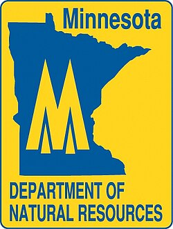

My Career Vision
Combining Marketing & Environmental Expertise for Sustainable Impact
🌲 Minnesota Department of Natural Resources (DNR)

Outdoor Natural Resource Management
I am passionate about working outdoors for the Minnesota DNR, managing and preserving the rare and precious natural resources our state has to offer. With Minnesota's incredible biodiversity and thousands of lakes, forests, and wildlife habitats, I want to be part of the team that ensures these treasures are protected for future generations. From managing wildlife populations to maintaining hiking trails, from conservation education to habitat restoration, the DNR offers the perfect opportunity to combine my environmental knowledge with hands-on outdoor work.
🏙️ City of Duluth - Sustainability & Marketing

Green Marketing & Renewable Energy
The City of Duluth represents the perfect intersection of my dual majors in Marketing and Environmental Studies. I would love to help Duluth become a leader in sustainability by developing innovative marketing strategies that promote renewable energy adoption, green infrastructure, and environmental consciousness. Using both my marketing expertise and environmental knowledge, I can help create compelling campaigns that make sustainability attractive, accessible, and achievable for residents and businesses alike.
My Unique Skill Combination
- Brand Development & Strategy
- Digital Marketing Campaigns
- Community Engagement
- Public Relations & Communication
- Market Research & Analysis
- Sustainability Planning
- Natural Resource Management
- Environmental Policy
- Conservation Biology
- Climate Change Solutions
- Wilderness Navigation
- Wildlife Habitat Management
- Field Research & Monitoring
- Trail Maintenance & Construction
- Environmental Education
- Team Project Coordination
- Community Outreach
- Stakeholder Engagement
- Problem-Solving & Innovation
- Time Management & Organization
My Career Vision
I envision a career where I can make a tangible difference in environmental conservation and sustainability. Whether I'm tracking wildlife populations in the Minnesota wilderness for the DNR or developing innovative marketing campaigns for Duluth's renewable energy initiatives, my goal is to bridge the gap between environmental science and public engagement. I want to help people understand why conservation matters and how they can be part of the solution to our environmental challenges. Through my unique combination of marketing skills and environmental passion, I aim to create positive change that protects Minnesota's natural beauty while building a more sustainable future for all.